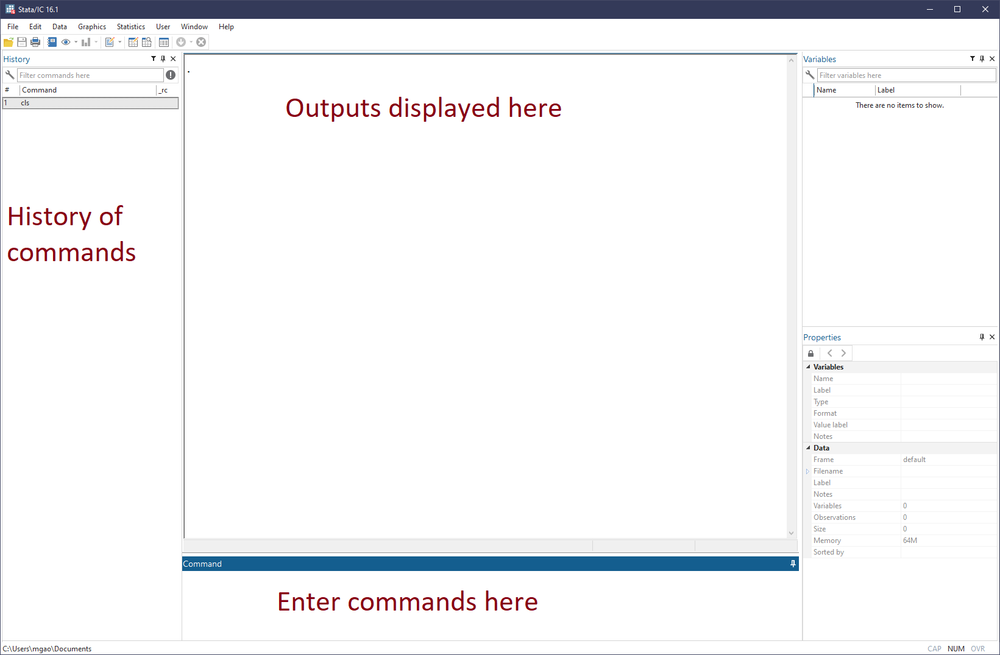
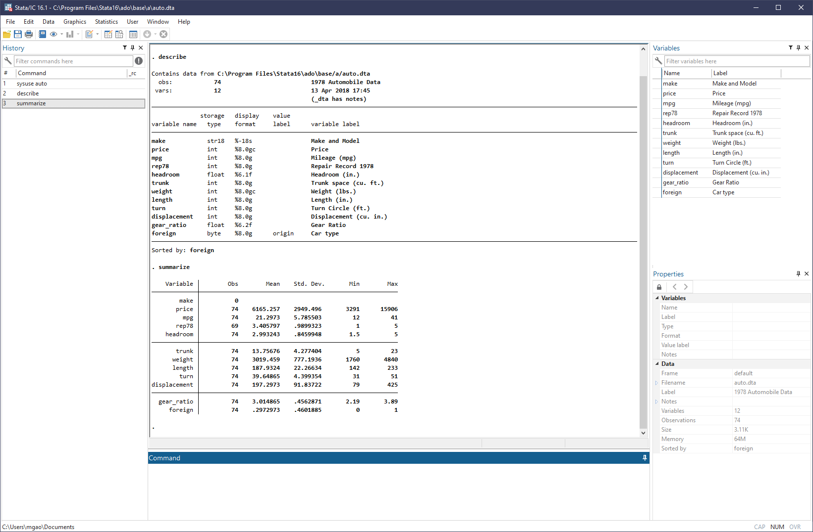
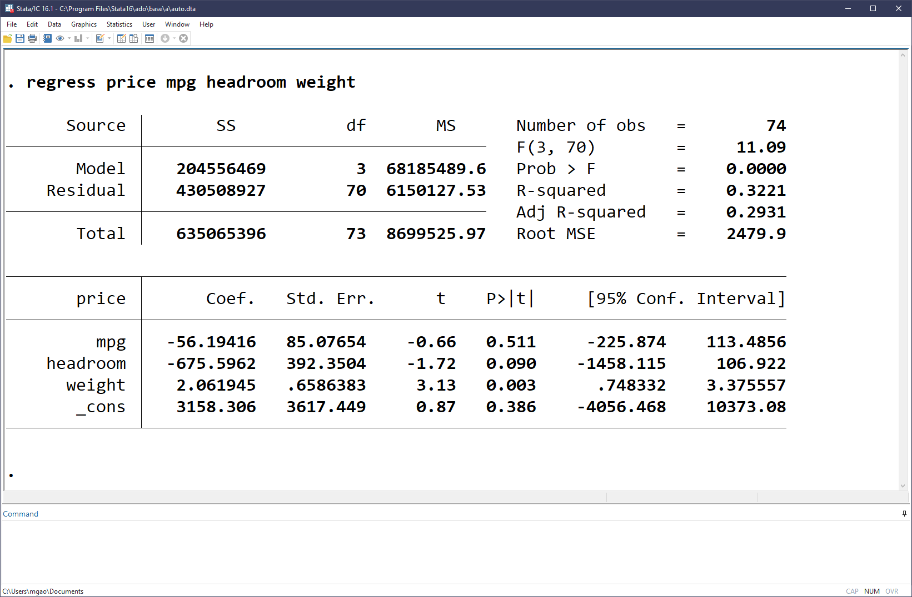
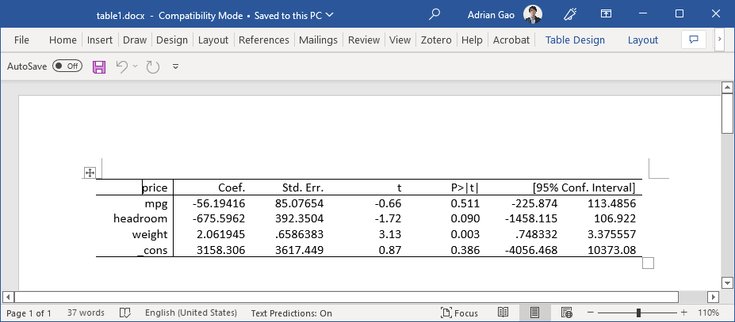

Stata - Introduction¶
Stata is a powerful statistical analysis software that we often use in empirical researches. This series of posts aims to provide some basic knowledge for junior researchers to get started with Stata, as well as some personal tips on more efficiently using Stata in research projects.1
Stata GUI¶
The Graphical User Interface (GUI) of Stata looks like this:

This is the default layout of Stata 16. Some preset preferences can be found via menu option Edit>Preferences>Load preference set. You can also save your personal preferences (color theme, layout, etc.) in the Edit>Preference menu.
Of the many windows of the GUI, we are mostly interested in the Results window (Ctrl+2) where outputs are displayed. While all other windows can be hidden or closed, the Results window always remains center of the GUI.
The Command window (Ctrl+1) is where we mostly interact with Stata by entering Stata commands. Since usually we need a group of commands to complete a task, it is a good idea to place them together in a do file (with the extension .do), which is the file type native to Stata, just like .py file to Python. Later, we will introduce the Stata's Do Editor (Ctrl+9) as a nice editor for .do files.
Tip
As a researcher, keeping good record of the programs and codes used is a merit. For oneself, it boosts productivity as more codes are accumulated. Beyond that, it ensures all results can be replicated even years later. Nowadays, more and more top journals also require submission of the codes used in the paper.
Basic demonstration¶
Now let's start tying our first Stata command in the Command window.
Working directory¶
First, let's type pwd (and hit Eneter), which is a command to display the current working directory. Knowing the current working directory, for example, allows you to use relative path correctly.
Throughout this series, I'll follow the tradition and prefix all Stata commands with ., hence . pwd meaning "enter the pwd command in the Command window":
From the Results window, we can see a line of text like "C:\Users\mgao\Documents", which is the output of executing the pwd command, i.e., the current working directory of Stata on my PC.
We can change the current working directory to another directory on the computer via the command cd, for example:
Then we can verify that it's indeed changed by pwd again.
Structure of a Stata command¶
The above two examples (pwd and cd) already showcase the basic syntax structure of Stata commands. With a few exceptions, a Stata command is like:
or technically,
cmd [varlist | namelist | anything] [if] [in] [using filename] [= exp] [weight] [, options]
where cmd is the name of a command and everything in [ ] is optional.
Some other quick examples¶
display prints a message to the Results window:
cls clears the Results window:
clear clears memory, removing the dataset loaded, if any:
log echos a copy of the session to file:
Create a log file name stata101.log in the current working directory. The replace option asks Stata to replace the log file if it already exists. Untill . log close, everything displayed in Results will be saved in the log file.
cmdlog is similar to log but records only the commands but no results.
What about regression?¶
Of course, Stata is famous for its superior statistical analysis. Let's see how regressions can be easily done in Stata.
Load dataset¶
We start by loading an example dataset that comes with Stata installation. This can be done via sysuse command. We use the dataset named "auto":
Tip
Stata comes with several builtin datasets. Use . sysuse dir to have a look.
More generally, we can use our own datasets. We'll see more on this later.
We can now ask Stata to describe the meta information of the dataset and summarize the variables in terms of number of observations, mean, standard deviation, etc.
The screenshot below shows the output:

Enlarge the output of describe:
. describe
Contains data from C:\Program Files\Stata16\ado\base/a/auto.dta
obs: 74 1978 Automobile Data
vars: 12 13 Apr 2018 17:45
(_dta has notes)
--------------------------------------------------------------------------------
storage display value
variable name type format label variable label
--------------------------------------------------------------------------------
make str18 %-18s Make and Model
price int %8.0gc Price
mpg int %8.0g Mileage (mpg)
rep78 int %8.0g Repair Record 1978
headroom float %6.1f Headroom (in.)
trunk int %8.0g Trunk space (cu. ft.)
weight int %8.0gc Weight (lbs.)
length int %8.0g Length (in.)
turn int %8.0g Turn Circle (ft.)
displacement int %8.0g Displacement (cu. in.)
gear_ratio float %6.2f Gear Ratio
foreign byte %8.0g origin Car type
--------------------------------------------------------------------------------
Sorted by: foreign
Run regression¶
Suppose we'd like to estimate a simple liner regression to study the relation between car price and mileage, headroom and weight:
All we need to do is a simple line of code,
which would generate the following estimation results:

Save results¶
One of the coolest things Stata can do is to export the tabulated regression results to Microsoft Word, PDF, LaTeX and more.
Save to Word¶
For example, we can save the previous results (as shown in the screenshot above) to a Word document named "table1" (table1.docx) easily with the following three lines of codes.
Behind the scene, Stata creates a .docx to work with. putdocx table command creates a new table (mytable) in the .docx file containing estimation results (etable tells it to tabulates the coefficients from previous estimation). Lastly, Stata saves the .docx file as "table1.docx" in the current working directory.

Save to LaTeX¶
If working with LaTeX, you can export results as TeX files conveniently too.
For this purpose, though, an additional Stata package estout is required. Personally I'd say this is gold. You can install estout package via a single command in Stata:
Now, you can use the following two lines of codes:
. eststo: regress price mpg headroom weight
. esttab using "table1.tex", tex replace label star(* 0.10 ** 0.05 *** 0.01) nogaps compress
to produce a TeX file ("table1.tex") with the following content:
{
\def\sym#1{\ifmmode^{#1}\else\(^{#1}\)\fi}
\begin{tabular}{l*{1}{c}}
\hline\hline
&\multicolumn{1}{c}{(1)}\\
&\multicolumn{1}{c}{Price}\\
\hline
Mileage (mpg) & -56.19 \\
& (-0.66) \\
Headroom (in.) & -675.6\sym{*} \\
& (-1.72) \\
Weight (lbs.) & 2.062\sym{***}\\
& (3.13) \\
Constant & 3158.3 \\
& (0.87) \\
\hline
Observations & 74 \\
\hline\hline
\multicolumn{2}{l}{\footnotesize \textit{t} statistics in parentheses}\\
\multicolumn{2}{l}{\footnotesize \sym{*} \(p<0.10\), \sym{**} \(p<0.05\), \sym{***} \(p<0.01\)}\\
\end{tabular}
}
You can check the PDF compiled from the above TeX code at this Overleaf link.
Note
We will revisit and elaborate on these topics later. I deliberately make them oversimplified only to show you what Stata can do in making our lives much easier.
-
I prepare this series of introductory course notes for the BUSS7902 Quantitative Business Research Methods for PhD students at the University of Sydney Business School in Semester 1, 2023. ↩